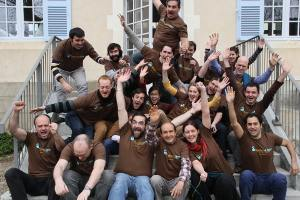

Quoi ?
Opération Libre c'est 48 heures d'animations participatives
Pour collecter et libérer les informations et outils d'une commune
Avec les habitants, des associations et contributeurs
Qui ?
L'Opération Libre est une initiative d'organisations travaillant autour des outils, licences, contenus et données libres. Elle a pour objectif de démontrer les opportunités de la libre diffusion des outils et informations des communes. La seconde édition 2016 à Montreuil-en-Touraine est organisée à l'initiative de CoopAxis et avec le soutien de la commune de Montreuil-en-Touraine.
Comment ?
Nous invitons les contributeurs de projets libres, les historiens, géographes, botanistes, développeurs, cartographes, photographes, designers, traducteurs, vidéastes, professionnels ou en herbe... et tous les curieux à nous rejoindre sur les animations :
- Répertorier la faune et flore locale sur Tela Botanica
- Créer des cartes du territoire basées sur Openstreetmap
- Prendre des photographies et les partager librement sur Commons
- Rédiger des articles historiques de la commune sur Wikipedia
- Imprimantes 3D, films, Drônes, vues aériennes, et bien plus encore !
Pour qui ?
Tout le monde !
Même si ces animations regroupent beaucoup de spécialistes, toute personne intéressée peut librement participer, des enfants aux anciens, en famille ou en solo.

Voici quelques actions accessibles à tous :
- Mettre à disposition vos archives, cartes postales, images de la commune
- Se former à maintenir la carte de la commune à jour
- Répertorier les plantes sur la commune
- Participer aux collectes d'informations et prises de photos
Quand et où ?
Montreuil-en-Touraine est une commune de la région Centre-Val-de-Loire de 817 habitants (2013)
située dans le département d'Indre-et-Loire.
Soutenue par l'association CoopAxis, la commune de Montreuil-en-Touraine souhaite valoriser son territoire en démarrant une démarche de récolte et de partage de données libres.
Donnons-lui un coup de pouce !
Voir la carte en plein écran
Programme
Le programme est en cours d'élaboration.
Informations pratiques
Comment venir ?Les participants seront accueillis dès le vendredi 7 octobre en fin de journée sur la commune de Montreuil-en-Touraine.
- Voiture : Autoroute A10, sortie n°18 "Château-Renault".
- Train :
- Arrivée à Saint-Pierre-des-Corps (1 heure en TGV, 2 heures en TER de Paris)
- Des navettes seront mises à disposition des participants entre Saint-Pierre-des-Corps et Montreuil-en-Touraine.
- Transports locaux (bus, TER): "JVmalin" le calculateur transports en commun de la région Centre-Val-de-Loire.
- Covoiturage : propositions à venir sur le Wiki.
- Avion: Aéroport Tours Val de Loire
- Hébergement : propositions à venir sur le Wiki.
- Tourisme : L'office de tourisme Tours Val-de-Loire.
Restauration: Restauration sur place pour les participants inscrits.
Contact
Inscrivez-vous à la liste de discussion dédiée à Opération Libre. Si vous avez des questions ou souhaitez rejoindre les partenaires, organisateurs, participants... contactez-nous ! contact@operation-libre.org et @operationlibre.